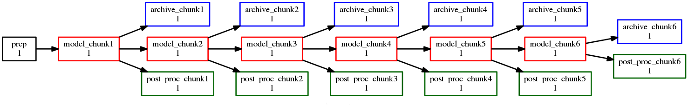

Task Parameters
Cylc can automatically generate related tasks and dependencies by expanding
parameterized names over lists or ranges of
values. Uses for this include:
- Generating an ensemble of similar model runs
- Generating chains of tasks to process similar datasets
- Replicating an entire workflow, or part thereof, over several runs
- Splitting a long model run into smaller chunks
- Parameterized cycling
Note
Cylc supports use of Jinja2 and Empy templating for programmatic generation of workflow
configurations. The built-in parameterization system described here
is a cleaner and easier alternative for generating tasks and families
over a range of parameters, but unlike general templating it can only be
used for that specific purpose.
Parameter Expansion
Parameter values can be lists of strings, or lists of integers and
integer ranges (with inclusive bounds). Numeric values in a list of strings are
considered strings. It is not possible to mix strings with integer ranges.
For example:
[task parameters]
# parameters: "ship", "buoy", "plane"
# default task suffixes: _ship, _buoy, _plane
obs = ship, buoy, plane
# parameters: 1, 2, 3, 4, 5
# default task suffixes: _run1, _run2, _run3, _run4, _run5
run = 1..5
# parameters: 1, 3, 5, 7, 9
# default task suffixes: _idx1, _idx3, _idx5, _idx7, _idx9
idx = 1..9..2
# parameters: -11, -1, 9
# default task suffixes: _idx-11, _idx-01, _idx+09
idx = -11..9..10
# parameters: 1, 3, 5, 10, 11, 12, 13
# default task suffixes: _i01, _i03, _i05, _i10, _i11, _i12, _i13
i = 1..5..2, 10, 11..13
# parameters: "0", "1", "e", "pi", "i"
# default task suffixes: _0, _1, _e, _pi, _i
item = 0, 1, e, pi, i
# ERROR: mix strings with int range
p = one, two, 3..5
Then angle brackets denote use of these parameters throughout the workflow
configuration. For the values above, this parameterized name:
model<run> # for run = 1..5
expands to these concrete task names:
model_run1, model_run2, model_run3, model_run4, model_run5
and this parameterized name:
proc<obs> # for obs = ship, buoy, plane
expands to these concrete task names:
proc_ship, proc_buoy, proc_plane
By default, to avoid any ambiguity, the parameter name appears in the expanded
task names for integer values, but not for string values. For example,
model_run1 for run = 1, but proc_ship for
obs = ship. However, the default expansion templates can be
overridden if need be:
[task parameters]
obs = ship, buoy, plane
run = 1..5
[[templates]]
run = -R%(run)s # Make foo<run> expand to foo-R1 etc.
See [task parameters][templates] for more on the string
template syntax.
Any number of parameters can be used at once. This parameterization:
model<run,obs> # for run = 1..2 and obs = ship, buoy, plane
expands to these tasks names:
model_run1_ship, model_run1_buoy, model_run1_plane,
model_run2_ship, model_run2_buoy, model_run2_plane
Here’s a simple but complete example workflow:
[task parameters]
run = 1..2
[scheduling]
[[graph]]
R1 = "prep => model<run>"
[runtime]
[[model<run>]]
# ...
The result, post parameter expansion, is this:
[scheduling]
[[graph]]
R1 = "prep => model_run1 & model_run2"
[runtime]
[[model_run1]]
# ...
[[model_run2]]
# ...
Here’s a more complex graph using two parameters ([runtime]
omitted):
[task parameters]
run = 1..2
mem = cat, dog
[scheduling]
[[graph]]
R1 = """
prep => init<run> => model<run,mem> =>
post<run,mem> => wrap<run> => done
"""
The result as visualized by cylc graph is:
Zero-Padded Integer Values
Integer parameter values are given a default template for generating task
suffixes that are zero-padded according to the longest size of their values.
For example, the default template for p = 9..10 would be
_p%(p)02d, so that foo<p> would become foo_p09, foo_p10.
If negative values are present in the parameter list, the
default template will include the sign.
For example, the default template for p = -1..1 would be
_p%(p)+02d, so that foo<p> would become
foo_p-1, foo_p+0, foo_p+1.
To get thicker padding and/or alternate suffixes, use a template. E.g.:
[task parameters]
i = 1..9
p = 3..14
[[templates]]
i = _i%(i)02d # suffixes = _i01, _i02, ..., _i09
# A double-percent gives a literal percent character
p = %%p%(p)03d # suffixes = %p003, %p004, ..., %p013, %p014
Parameters as Full Task Names
Parameter values can be used as full task names, but the default template
should be overridden to remove the initial underscore. For example:
[task parameters]
i = 1..4
obs = ship, buoy, plane
[[templates]]
i = i%(i)d # task name must begin with an alphabet
obs = %(obs)s
[scheduling]
[[graph]]
R1 = """
foo => <i> # foo => i1 & i2 & i3 & i4
<obs> => bar # ship & buoy & plane => bar
"""
Passing Values To Tasks
Parameter values are passed as environment variables to tasks generated by
parameter expansion. For example, if we have:
[task parameters]
obs = ship, buoy, plane
run = 1..5
[scheduling]
[[graph]]
R1 = model<run,obs>
Then task model_run2_ship would get the following standard
environment variables:
# In a job script of an instance of the "model_run2_ship" task:
export CYLC_TASK_PARAM_run="2"
export CYLC_TASK_PARAM_obs="ship"
These variables allow tasks to determine which member of a parameterized
group they are, and so to vary their behaviour accordingly.
You can also define custom variables and string templates for parameter value
substitution. For example, if we add this to the above configuration:
[runtime]
[[model<run,obs>]]
[[[environment]]]
MYNAME = %(obs)sy-mc%(obs)sface
MYFILE = /path/to/run%(run)03d/%(obs)s
Then task model_run2_ship would get the following custom
environment variables:
# In a job script of an instance of the "model_run2_ship" task:
export MYNAME=shipy-mcshipface
export MYFILE=/path/to/run002/ship
Selecting Specific Values
Specific parameter values can be singled out in the graph and under
[runtime] with the notation <p=5> (for example).
Here’s how to make a special task trigger off just the first of a
set of model runs:
[task parameters]
run = 1..5
[scheduling]
[[graph]]
R1 = """
model<run> => post_proc<run> # general case
model<run=1> => check_first_run # special case
"""
[runtime]
[[model<run>]]
# config for all "model" runs...
[[model<run=1>]]
# special config (if any) for the first model run...
#...
Selecting Partial Ranges
The parameter notation does not currently support partial range selection such
as foo<p=5..10>, but you can achieve the same result by defining a
second parameter that covers the partial range and giving it the same expansion
template as the full-range parameter. For example:
[task parameters]
run = 1..10 # 1, 2, ..., 10
runx = 1..3 # 1, 2, 3
[[parameter templates]]
run = _R%(run)02d # _R01, _R02, ..., _R10
runx = _R%(runx)02d # _R01, _R02, _R03
[scheduling]
[[graph]]
R1 = """model<run> => post<run>
model<runx> => checkx<runx>"""
[runtime]
[[model<run>]]
# ...
#...
Offsets in the Graph
A negative offset notation <NAME-1> is interpreted as the previous
value in the ordered list of parameter values, while a positive offset is
interpreted as the next value. For example, to split a model run into multiple
steps with each step depending on the previous one, either of these graph lines:
model<run-1> => model<run> # for run = 1, 2, 3
model<run> => model<run+1> # for run = 1, 2, 3
expands to:
model_run1 => model_run2
model_run2 => model_run3
# or equivalently:
model_run1 => model_run2 => model_run3
And this graph:
proc<size-1> => proc<size> # for size = small, big, huge
expands to:
proc_small => proc_big
proc_big => proc_huge
# or equivalently:
proc_small => proc_big => proc_huge
Task Families and Parameters
Task family members can be generated by parameter expansion:
[runtime]
[[FAM]]
[[member<r>]]
inherit = FAM
# Result: family FAM contains member_r1, member_r2, etc.
Family names can be parameterized too, just like task names:
[runtime]
[[RUN<r>]]
[[model<r>]]
inherit = RUN<r>
[[post_proc<r>]]
inherit = RUN<r>
# Result: family RUN_r1 contains model_r1 and post_proc_r1,
# family RUN_r2 contains model_r2 and post_proc_r1, etc.
As described in Family Triggers family names can be used to
trigger all members at once:
or to trigger off all members:
FAMILY:succeed-all => bar
or to trigger off any members:
FAMILY:succeed-any => bar
If the members of FAMILY were generated with parameters, you can
also trigger them all at once with parameter notation:
Similarly, to trigger off all members:
member<m> => bar
# (member<m>:fail etc., for other trigger types)
Family names are still needed in the graph, however, to succinctly express
“succeed-any” triggering semantics, and all-to-all or any-to-all triggering:
(Direct all-to-all and any-to-all family triggering is not recommended for
efficiency reasons though - see Efficient Inter-Family Triggering).
For family member-to-member triggering use parameterized members.
For example, if family OBS_GET has members get<obs> and
family OBS_PROC has members proc<obs> then this graph:
get<obs> => proc<obs> # for obs = ship, buoy, plane
expands to:
get_ship => proc_ship
get_buoy => proc_buoy
get_plane => proc_plane
Parameterized Cycling
For smaller workflows of finite duration, parameter expansion can be used to
generate a sequence of pre-defined tasks as a proxy for cycling.
Here’s a cycling workflow of two-monthly model runs for one year, with
previous-instance model dependence:
[scheduling]
initial cycle point = 2020-01
final cycle point = 2020-12
[[graph]]
# Run once, at the initial point.
R1 = "prep => model"
# Run at 2-month intervals between the initial and final points.
P2M = "model[-P2M] => model => post_proc & archive"
[runtime]
[[model]]
script = "run-model $CYLC_TASK_CYCLE_POINT"
And here’s how to do the same thing with parameterized tasks instead of cycling:
[task parameters]
chunk = 1..6
[scheduling]
[[graph]]
R1 = """
prep => model<chunk=1>
model<chunk-1> => model<chunk> =>
post_proc<chunk> & archive<chunk>
"""
[runtime]
[[model<chunk>]]
script = """
# Compute start date from chunk index and interval.
INITIAL_POINT=2020-01
INTERVAL_MONTHS=2
OFFSET_MONTHS=(( (CYLC_TASK_PARAM_chunk - 1)*INTERVAL_MONTHS ))
OFFSET=P${OFFSET_MONTHS}M # e.g. P4M for chunk=3
# Run the model.
run-model $(cylc cyclepoint --offset=$OFFSET $INITIAL_POINT)
"""
The two workflows achieve the same result, and both can include special
behaviour at the start, end, or anywhere in between.

The parameterized version has several disadvantages, however:
- The workflow must be finite in extent and not too large because every
parameterized task generates a new task definition
- (In a cycling workflow a single task definition acts as a template for
all cycle point instances of a task)
- Datetime arithmetic has to be done manually
- (This doesn’t apply if it’s not a datetime sequence; parameterized
integer cycling is straightforward.)
Parameterized Sub-Cycles
A workflow can have multiple main cycling sequences, but sub-cycles within each
main cycle point have to be parameterized. A typical use case for this is
incremental processing of files generated sequentially during a long model run.
Here’s a workflow that uses parameters to split a long model run in each
datetime cycle point into four smaller runs:
[task parameters]
chunk = 1..4
[scheduling]
initial cycle point = 2020-01
[[graph]]
P1Y = """
model<chunk-1> => model<chunk>
model<chunk=4>[-P1Y] => model<chunk=1>
"""
The intercycle trigger connects the first chunk in each cycle point to the
last chunk in the previous cycle point. However, in this particular case it
might be simpler to use a 3-monthly datetime cycle instead:
[scheduling]
initial cycle point = 2020-01
[[graph]]
P3M = "model[-P3M] => model"
For another example, here task model generates 10 files in sequence as it
runs. Task proc_file0 triggers when the model starts running, to wait for
and process the first file; when that is done, proc_file1 triggers to wait
for the second file; and so on.
[task parameters]
file = 0..9
[scheduling]
initial cycle point = 2020-01
[[graph]]
P1Y = """
model:start => proc<file=0>
proc<file-1> => proc<file>
proc<file=9> => upload_products
"""
[runtime]
[[proc<file>]]
# ...
Offsets at Sequence Start
In cycling workflows, dependence on tasks prior to the start cycle point is
ignored . So this graph:
P1D = "model[-P1D] => model"
simplifies at the initial cycle point to this:
(Note this is a convenient way to bootstrap into an infinite cycle, but special
behaviour at the start point can be configured explicitly if desired).
Similarly, parameter offsets that go out of range are ignored. So this graph:
# for chunk = 1..4
R1 = "model<chunk-1> => model<chunk>"
simplifies for chunk=1 to this: